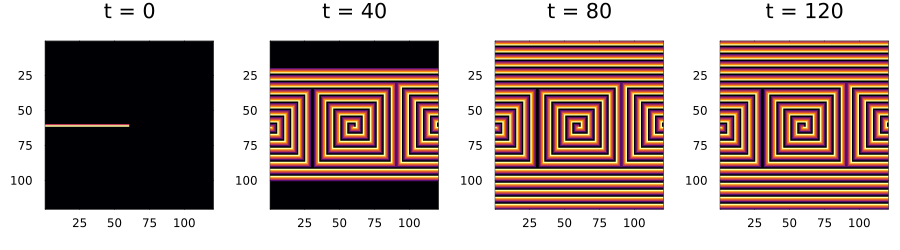
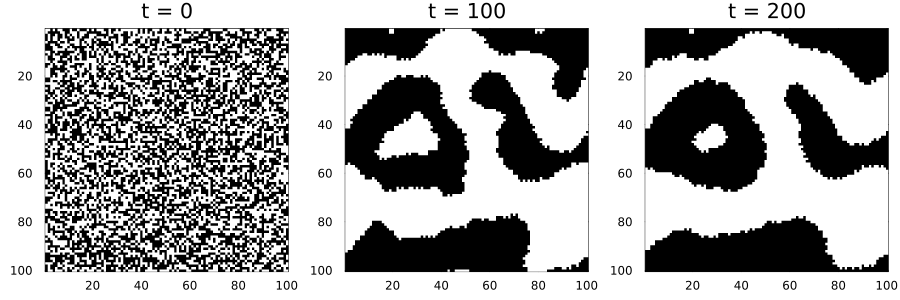
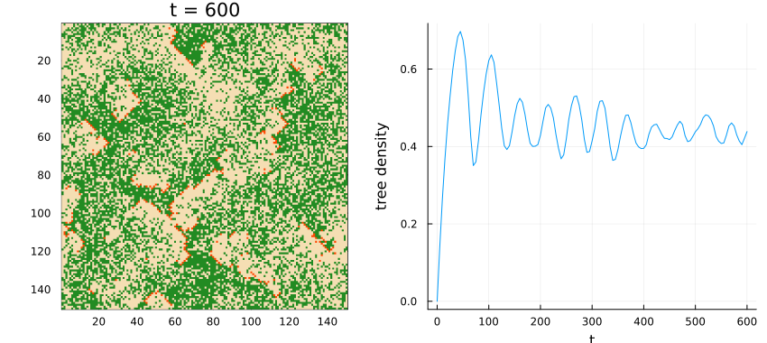
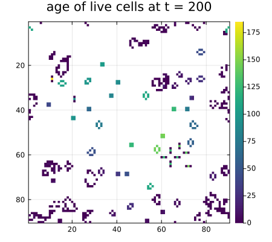
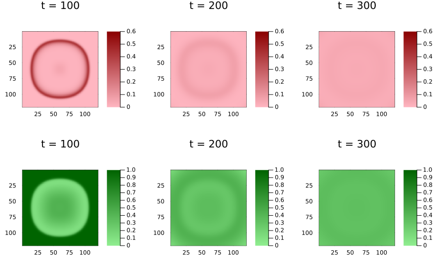
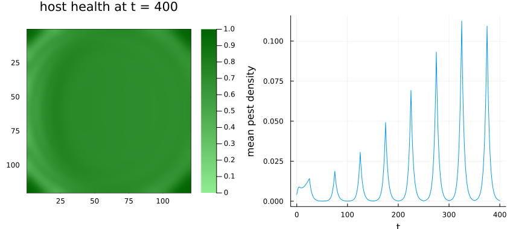

Custom local rules
Simon Frost
- Overview
- Integer states: an excitable medium
- Checking a rule against a built-in one
- Symbol states and random numbers: a forest-fire model
- Struct states
- Several layers: a host–pest model
- Parameters that vary in space and time
- Summary
Overview
The built-in rule families cover the classic automata, but most models, ecological ones especially, need their own rules. LocalRule turns any Julia function into a rule:
rule = LocalRule(neighbourhood) do cell, nbrs, ctx
# return the state of this cell at the next time step
endcellis the cell’s current state;nbrsholds its neighbours’ states: a tuple in the order ofneighbourhood_offsetson a lattice, a vector on a graph;ctxcarries the problem’s parameters (ctx.p), the cell’s index (ctx.index), the current time (ctx.t) and the cell’s random numbers.
States can be integers, Bools, Symbols, your own structs, or several layers at once. This vignette works through each.
ENV["GKSwstype"] = "100"
using CellularAutomataCore
using Plots
using RandomInteger states: an excitable medium
The Greenberg–Hastings model describes excitable media such as heart muscle or a nerve: a resting cell (0) becomes excited (1) when enough of its neighbours are excited, then passes through refractory states 2, …, n - 1 during which it cannot be excited again, and returns to rest.
greenberg_hastings = LocalRule(Moore(1); states=0:4) do cell, nbrs, ctx
if cell == 0
return count(==(1), nbrs) >= ctx.p.threshold ? one(cell) : cell
end
return cell == 4 ? zero(cell) : cell + one(cell)
endLocalRule(<anonymous function>, Moore(1))The states keyword lists the values the rule understands; an initial state holding anything else is rejected when the problem is built, not halfway through a run:
try
CAProblem(greenberg_hastings, Int8[0 7; 0 0], 1, (threshold=1,))
catch e
println(sprint(showerror, e))
endInvalidStateError in LocalRule(<anonymous function>, CellularAutomataCore.Moore(1)): cell CartesianIndex(1, 2) has value 7; allowed states are [0, 1, 2, 3, 4]A wave front with refractory cells behind it, broken off in the middle of the board:
u0 = zeros(Int8, 120, 120)
u0[60, 1:60] .= 1
u0[61, 1:60] .= 2
sol = solve(CAProblem(greenberg_hastings, u0, 120, (threshold=1,)); saveat=40)
plot([plot(sol; snapshot=i, c=:inferno, colorbar=false) for i in 1:4]...; layout=(1, 4),
size=(900, 250))
The free end of the broken front curls round its refractory tail into a spiral wave, which then keeps rotating; with the Moore neighbourhood and a threshold of one excited neighbour the spirals are square.
Checking a rule against a built-in one
Vichniac’s “twisted majority” sets each cell to the majority of the nine cells in its 3 × 3 block, except that sums of 4 and 5 are swapped. Written directly:
twisted_majority = LocalRule(Moore(1)) do cell, nbrs, ctx
s = cell + sum(nbrs)
return (s == 4 || s >= 6) ? one(cell) : zero(cell)
endLocalRule(<anonymous function>, Moore(1))Counting the centre separately, a dead cell becomes live with 4, 6, 7 or 8 live neighbours and a live cell stays live with 3, 5, 6, 7 or 8: the Life-like rule B4678/S35678. The two agree:
soup = Int8.(rand(Xoshiro(1), 0:1, 100, 100))
a = solve(CAProblem(twisted_majority, soup, 200); saveat=100)
b = solve(CAProblem(Life("B4678/S35678"), soup, 200); saveat=100)
a.u == b.utrueplot([plot(a; snapshot=i, c=:binary, colorbar=false) for i in 1:3]...; layout=(1, 3),
size=(900, 300))
Symbol states and random numbers: a forest-fire model
In the Drossel–Schwabl forest-fire model each cell is empty, a tree or on fire. Every step, empty ground grows a tree with probability p, a burning tree burns out, a tree next to a fire catches fire, and any other tree is struck by lightning with a small probability f.
Random numbers come from the context: uniform(ctx, k) is a number in $[0, 1)$ and bernoulli(ctx, q, k) is true with probability q. The k says which draw it is. Different k give independent numbers, and the same k gives the same number, so a rule should use a different k for every independent event:
forest_fire = LocalRule(VonNeumann(1); states=(:empty, :tree, :fire)) do cell, nbrs, ctx
cell == :fire && return :empty
cell == :empty && return bernoulli(ctx, ctx.p.p, 1) ? :tree : :empty
any(==(:fire), nbrs) && return :fire
return bernoulli(ctx, ctx.p.f, 2) ? :fire : :tree
end
u0 = fill(:empty, 150, 150)
prob = CAProblem(forest_fire, u0, 600, (p=0.03, f=5e-5); seed=2026)
sol = solve(prob; saveat=5)CASolution with 121 saved states at t = 0:…:600, retcode Success (LocalRule(<anonymous function>, VonNeumann(1)))Symbol states are plotted by mapping them to numbers:
code(s) = s == :empty ? 0 : s == :tree ? 1 : 2
density = [count(==(:tree), u) / length(u) for u in sol.u]
plot(plot(Torus(150, 150), code.(final_state(sol)); c=[:wheat, :forestgreen, :orangered],
colorbar=false, title="t = 600"),
plot(sol.t, density; xlabel="t", ylabel="tree density", legend=false);
layout=(1, 2), size=(850, 380))
Reproducibility
The k-th draw of a cell is a pure function of the problem’s seed, the cell, the time and k. It does not depend on the order in which cells are updated, so the result is the same however the model is run: on one thread, on all threads, or with the slow reference backend that the fast ones are tested against.
serial = solve(prob; backend=ArrayBackend(threaded=false), saveat=600)
threaded = solve(prob; backend=ArrayBackend(threaded=true), saveat=600)
reference = solve(prob; backend=ReferenceBackend(), saveat=600)
final_state(serial) == final_state(threaded) == final_state(reference) == final_state(sol)trueA different seed gives a different run:
other = solve(CAProblem(forest_fire, u0, 600, (p=0.03, f=5e-5); seed=1); saveat=600)
final_state(other) == final_state(sol)falseStruct states
Any isbits struct can be a state. Here Life cells also record how many steps they have been alive:
struct AgedCell
alive::Bool
age::Int16
end
aged_life = LocalRule(Moore(1)) do cell, nbrs, ctx
n = count(c -> c.alive, nbrs)
if cell.alive
return n == 2 || n == 3 ? AgedCell(true, cell.age + 1) : AgedCell(false, 0)
end
return n == 3 ? AgedCell(true, 0) : cell
end
u0 = reshape([AgedCell(rand(Xoshiro(i)) < 0.35, 0) for i in 1:(90 * 90)], 90, 90)
sol = solve(CAProblem(aged_life, u0, 200); saveat=200)
age = [c.alive ? Float64(c.age) : NaN for c in final_state(sol)]
plot(Torus(90, 90), age; c=:viridis, size=(450, 400), title="age of live cells at t = 200")
Several layers: a host–pest model
Ecological models often track several quantities per cell. A layered state is a NamedTuple of arrays, one per layer; each cell, and each neighbour, is then a NamedTuple with one value per layer, and the rule returns one too (the order of its fields does not matter).
In this model each cell has a host plant of health host (between 0 and 1) and a pest population of density pest. Pests disperse to neighbouring cells, grow on healthy hosts and die at a constant rate; hosts recover slowly and are damaged by pests:
host_pest = LocalRule(Moore(1)) do cell, nbrs, ctx
(; d, r, m, g, c) = ctx.p
mean_pest = sum(n.pest for n in nbrs) / length(nbrs)
pest = (1 - d) * cell.pest + d * mean_pest
pest = clamp(pest + r * pest * cell.host - m * pest, 0.0, 1.0)
host = clamp(cell.host + g * (1 - cell.host) - c * cell.pest * cell.host, 0.0, 1.0)
return (host=host, pest=pest)
end
n = 120
u0 = (host=ones(n, n), pest=zeros(n, n))
u0.pest[55:65, 55:65] .= 0.5
p = (d=0.4, r=0.6, m=0.2, g=0.01, c=0.5)
space = Grid(n, n; boundary=Reflecting())
sol = solve(CAProblem(host_pest, u0, 300, p; space); saveat=100)CASolution with 4 saved states at t = 0:…:300, retcode Success (LocalRule(<anonymous function>, Moore(1)))plot(sol; layer=...) picks the layer to draw:
plot([plot(sol; snapshot=i, layer=:pest, c=:reds, clims=(0, 0.6)) for i in 2:4]...,
[plot(sol; snapshot=i, layer=:host, c=:greens, clims=(0, 1)) for i in 2:4]...;
layout=(2, 3), size=(900, 560))
The pests spread outwards as a ring-shaped front, leaving damaged hosts behind it. Once the front has swept the field the hosts partly recover, and pests and hosts settle towards a uniform coexistence, with fading rings left over from the first wave.
trajectory stacks each layer separately, with time last:
tr = trajectory(sol)
keys(tr), size(tr.pest)((:host, :pest), (120, 120, 4))Parameters that vary in space and time
ctx.index is the cell’s position and ctx.t the current time, so parameters can vary across the landscape or with the seasons. Here hosts recover faster towards the right-hand side of the field, and pests only reproduce in the first half of each 50-step “year”:
seasonal = LocalRule(Moore(1)) do cell, nbrs, ctx
(; d, r, m, g, c, ncol) = ctx.p
g_here = g * 4 * ctx.index[2] / ncol
r_now = mod(ctx.t, 50) < 25 ? r : 0.0
mean_pest = sum(n.pest for n in nbrs) / length(nbrs)
pest = (1 - d) * cell.pest + d * mean_pest
pest = clamp(pest + r_now * pest * cell.host - m * pest, 0.0, 1.0)
host = clamp(cell.host + g_here * (1 - cell.host) - c * cell.pest * cell.host, 0.0, 1.0)
return (host=host, pest=pest)
end
sol = solve(CAProblem(seasonal, u0, 400, merge(p, (ncol=n,)); space))
mean_pest = [sum(u.pest) / length(u.pest) for u in sol.u]
plot(plot(sol; layer=:host, c=:greens, clims=(0, 1), title="host health at t = 400"),
plot(sol.t, mean_pest; xlabel="t", ylabel="mean pest density", legend=false);
layout=(1, 2), size=(850, 380))
Mean pest density now pulses: it rises during each breeding season and collapses between them, and over these eight years each outbreak is larger than the last.
Summary
| need | how |
|---|---|
| any rule | LocalRule(neighbourhood) do cell, nbrs, ctx ... end |
| reject bad initial states | LocalRule(...; states=allowed) |
| parameters | CAProblem(rule, u0, tspan, p), read as ctx.p |
| randomness | uniform(ctx, k), bernoulli(ctx, p, k), CAProblem(...; seed) |
| position and time | ctx.index, ctx.t |
| several layers | a NamedTuple of arrays as the state; plot(sol; layer) |
| your own state type | any isbits struct |